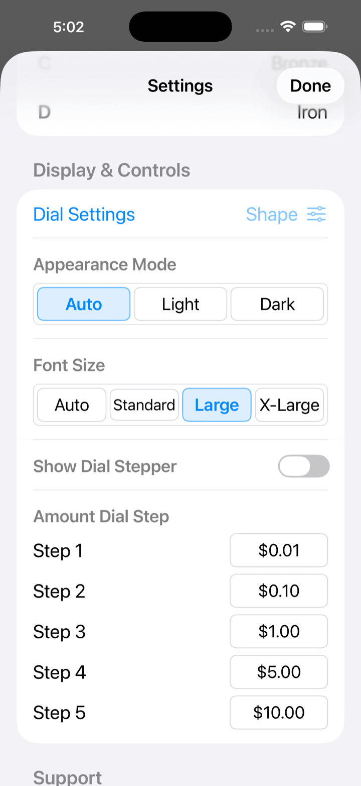
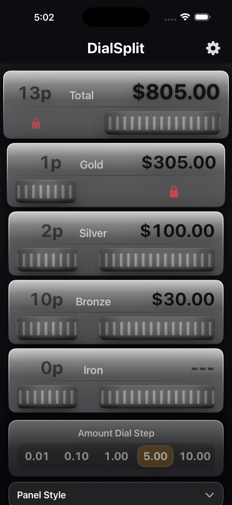

Guide d'utilisation DialSplit
Un guide visuel organisé autour de la structure de l'écran
DialSplit vous aide à répartir une addition en ajustant le nombre de personnes et les montants à l'aide de molettes tactiles
Ce guide est d'abord organisé autour de la structure visuelle, afin que vous puissiez comprendre l'écran principal, les verrous, les réglages et le comportement des devises en un coup d'œil
Écran principal
Touchez un repère pour afficher son explication

Touchez en dehors des repères pour fermer la bulle
Parcours d'utilisation
Définissez le montant total de l'addition depuis le panneau supérieur avec la molette ou le pavé numérique
Ajustez le nombre de personnes pour A / B / C / D avec les molettes de gauche
Réglez les montants B / C / D et laissez le panneau A se mettre à jour automatiquement
Figez uniquement les personnes, ou figez tous les contrôles pour éviter les modifications accidentelles
Plan des réglages
Écran des réglages
Touchez un repère pour afficher le rôle de chaque ligne

Vous pouvez également retrouver ces mêmes éléments dans la galerie de captures d'écran ci-dessous
Gestion des devises selon la langue régionale
Japonais / Japon
Traité comme une devise entière. Les valeurs de pas sont affichées sans symbole monétaire
Anglais / États-Unis
Pour les devises à deux décimales, les valeurs sont stockées dans la plus petite unité monétaire
Anglais / Koweït
Les devises à trois décimales sont également prises en charge, sans décalage entre l'affichage et les unités internes
Captures d'écran supplémentaires
Entrée Réglages de la molette

Ouvrez la feuille de réglages de la molette depuis cette ligne pour ajuster la sensation d'interaction et l'apparence
Mode d'apparence

Choisissez Automatique, Clair ou Sombre. Le mode automatique suit l'apparence du système
Apparence sombre

L'apparence sombre garde les molettes et les libellés lisibles en usage peu éclairé
Variantes d'arrière-plan


Cuir brun et Cuir noir sont sélectionnables depuis les réglages. Monochrome est également disponible dans la même section
Historique des versions
| Version | Date de sortie | Environnement de développement |
|---|---|---|
| 1.0.0 | 2011/10/4 | Version initiale — Objective-C, Xcode 4, iOS 4 |
| 1.1.0 | 2012/4/10 | Objective-C, Xcode 4, iOS 5 |
| 1.2.0 | 2017/4/19 | Objective-C, Xcode 8, iOS 10 |
| 2.0.0 | 2026/4/16 | Swift 6 / SwiftUI, Xcode 26, iOS 26 |
| 2.0.1 | 2026/4/17 | Ajout du pourboire et des publicités récompensées pour soutenir le développeur |
| 2.1.0 | 2026/4/22 | Ajout du verrou des personnes, du verrou complet, des réglages de la molette, du mode d'apparence, des réglages d'arrière-plan, des réglages du pas de la molette de montant, et de la gestion des devises selon la langue régionale |